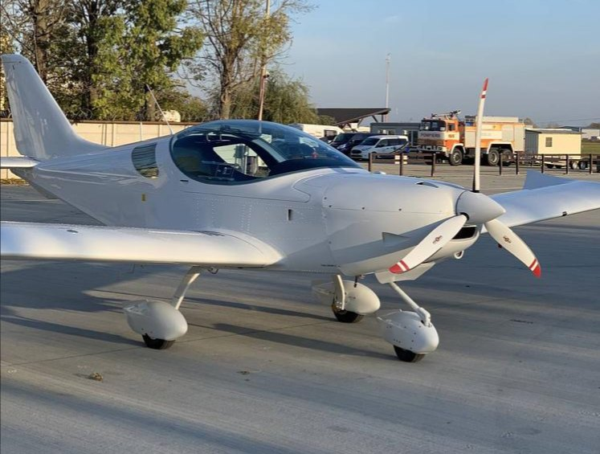
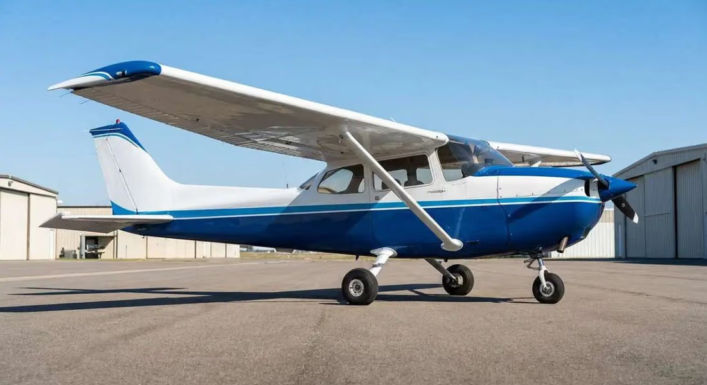
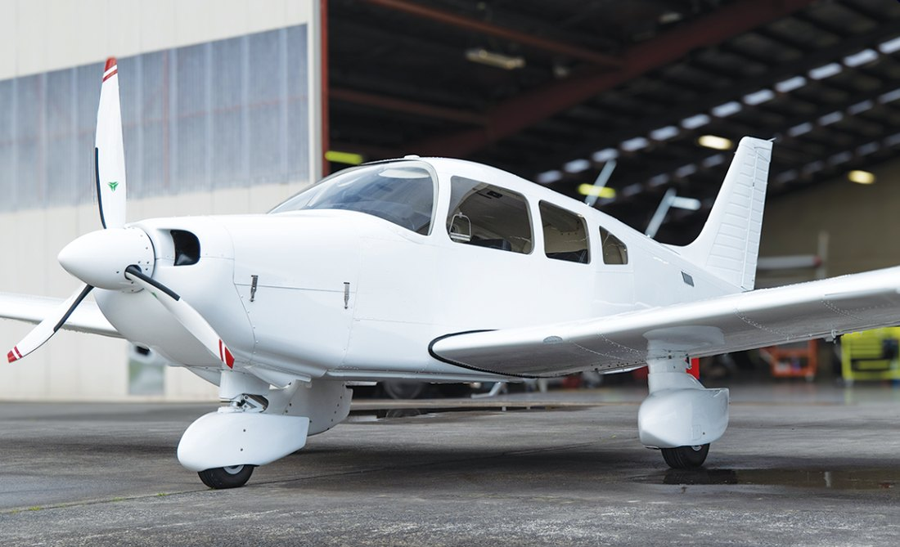

Práctica interna de Fase 0 · reparto estimado
Cada tabla lleva los tres aviones en el mismo orden y color: Cruiser · C172 · Piper. Pulsa «Tapar valores» encima de cada tabla para memorizarla y «Ponme a prueba» para comprobarte.
| Dato | Cruiser | C172 | Piper |
|---|---|---|---|
| Modelo | Rotax 912 S2 | Lycoming O-320-H2AD | Lycoming O-320-D2A/D3O |
| Potencia | 100 HP | 160 BHP a 2700 RPM | 160 BHP a 2700 RPM |
| Cilindros | 4, opuestos | 4, opuestos | 4, opuestos |
| Refrigeración | líquido y aire | aire | aire |
| Transmisión | con reductora | directo | directo |
| Hélice | Woodcomp Klassic · 3 palas | McCauley · 2 palas · 74–75 in | Sensenich · 2 palas · 72–74 in |
| Paso | fijo, ajustable en tierra | fijo | fijo |



| Dato | Cruiser | C172 | Piper |
|---|---|---|---|
| Capacidad | 114 L | 43 US gal | 50 US gal |
| Utilizable | 113 L | 40 US gal | 48 US gal |
| Utilizable en litros | 113 L | ≈ 151 L | ≈ 181 L |
| Combustible | MOGAS y AVGAS | 100 y 100LL AVGAS | 100LL AVGAS |
| Aceite | — | capacidad 6 qts · mínimo 4 qts | 6 a 8 qts |
| Peso | Cruiser | C172 | Piper |
|---|---|---|---|
| MTOW | 600 kg | 2300 lbs normal · 2000 lbs utility | 2325 lbs |
| MLW | 600 kg | = MTOW | = MTOW |
| MTOW en kg (aprox.) | 600 kg | 1043 kg · 907 kg | 1055 kg |
| Dato | Cruiser |
|---|---|
| Potencia máxima | 73,5 kW a 5800 RPM (máx. 5 min) |
| Potencia máxima continua (MCP) | 69 kW a 5500 RPM |
| Autonomía / alcance a 3000 ft | 5:26 h · 512 NM |
| Dato | Cruiser |
|---|---|
| Total / útil | 114 L / 113 L |
| Combustible | MOGAS, AVGAS |
| Diferencia máx. entre depósitos | 30 L |
| Masa máx. de combustible | 82 kg (114 L × 0,72) |
| Dato | Cruiser |
|---|---|
| MTOW = MLW | 600 kg |
| Peso vacío máx. | 405 kg |
| Equipaje | 18 kg atrás · 10 kg en cada wing locker |
| Asientos / tripulación | 2 · 55–115 kg por asiento · piloto mínimo en el izquierdo |
| Datum | borde de ataque del ala, costilla 4 |
| CG | 28–35 % MAC (MAC 1500 mm: 420–525 mm) |
| Dato | Cruiser | C172 | Piper |
|---|---|---|---|
| Motor | Rotax 912 S2 · 100 HP | Lycoming 160 BHP | Lycoming 160 BHP |
| Hélice | 3 palas | 2 palas | 2 palas |
| Combustible útil | 113 L | 40 US gal | 48 US gal |
| MTOW | 600 kg | 2300 lbs | 2325 lbs |
| Unidades | métricas | US | US |
| Velocidad | Cruiser | C172 | Piper |
|---|---|---|---|
| VS0 | 31 | 41 | 44 |
| VS1 | 37 | 47 | 50 |
| VFE | 75 | 85 | 103 |
| VNO | 108 | 128 | 126 |
| VNE | 138 | 160 | 160 |
| VA | 88 (600 kg) | 80–97 | 88–111 |
| Planeo | 60 | 65 | 73 |
| Límite | Cruiser | C172 | Piper |
|---|---|---|---|
| Flaps arriba · normal | +4 / −2 g | +3,8 g | +3,8 / −1,52 g |
| Flaps abajo | +2 / 0 g | +3,0 g | +3,0 g |
| Presión de aceite | 0,8–7 bar | 25–100 psi | 25–100 psi |
| Temperatura de aceite | 50–130 °C | máx. 118 °C | máx. 118 °C |
| Sistema | Cruiser | C172 | Piper |
|---|---|---|---|
| Flaps | eléctricos, continuos: 0 · 12° · 30° | eléctricos: 10° · 20° · Full | manuales: 10° · 25° · 40° |
| Cola horizontal | elevador | elevador | stabilator |
| Rueda de morro | libre · frenado diferencial | 10° (30° con frenos) | pedales |
| Selector de combustible | Left · Right · Off | con posición BOTH | con válvula selectora |
| Batería | 12 V | 24 V | 12 V |
| Generación | generador 250 W → 12 V 20 A | alternador 28 V 60 A | alternador 14 V 60 A |
| Mufflers | — | 1 | 2 |
| KIAS · qué protege | Cruiser | C172 | Piper | Nota |
|---|---|---|---|---|
| VNE Never Exceed | 138 | 160 | 160 | estructura |
| VNO Normal Operating | 108 | 128 | 126 | turbulencia |
| VA Maneuvering | 88 (a 600 kg) | 80–97 | 88–111 | mandos a fondo |
| VFE Flaps Extended | 75 | 85 | 103 | flaps abajo |
| Arco | Cruiser | C172 | Piper |
|---|---|---|---|
| Arco blanco | 31 – 75 | 41 – 85 | 44 – 103 |
| Arco verde | 37 – 108 | 47 – 128 | 50 – 126 |
| Arco amarillo | 108 – 138 | 128 – 160 | 126 – 160 |
| Línea roja | 138 | 160 | 160 |
| Configuración | Cruiser | C172 | Piper |
|---|---|---|---|
| Flaps arriba · normal | +4 / −2 g | +3,8 g | +3,8 / −1,52 g |
| Flaps arriba · utility | no aprobado | +4,4 g | +4,4 / −1,76 g |
| Flaps abajo | +2 / 0 g | +3,0 g | +3,0 g |
| Límite | Cruiser | C172 | Piper |
|---|---|---|---|
| Presión de aceite | 0,8 – 7 bar | 25 – 100 psi | 25 – 100 psi |
| Temperatura del aceite | 50 – 130 °C (mínimo 50) | máx. 118 °C | máx. 118 °C |
| Presión de combustible | — | — | 0,5 – 8 psi |
| Aceite mínimo | — | más de 4 qts | — |
| CG | Cruiser | C172 | Piper |
|---|---|---|---|
| Límite delantero | 28 % MAC | 31 in con 1950 lbs o menos | 83 in con 1950 lbs o menos |
| Límite trasero | 35 % MAC | 47,3 in con cualquier peso | 93 in con cualquier peso |
| Datum | borde de ataque del ala, costilla 4 | parte baja del frente del cortafuegos | — |
Cada avión usa unidades distintas: el Cruiser, % de la MAC; Piper y Cessna, pulgadas desde el datum.
| Límite | Cruiser | C172 | Piper |
|---|---|---|---|
| VS0 · VS1 | 31 · 37 | 41 · 47 | 44 · 50 |
| VFE · VNO · VNE | 75 · 108 · 138 | 85 · 128 · 160 | 103 · 126 · 160 |
| VA | 88 kt a 600 kg | 80–97 | 88–111 |
| Límite | Cruiser |
|---|---|
| Presión de aceite | 0,8 – 7 bar |
| Temperatura del aceite | 50 – 130 °C (mínimo 50) |
| Temperatura del refrigerante | máx. 120 °C |
| EGT | máx. 850 °C (880 °C en el despegue) |
| Con −0,5 g | solo 5 segundos |
| Mandos | Cruiser | C172 | Piper |
|---|---|---|---|
| Cola horizontal | elevador | elevador | stabilator + anti-balance tab |
| Flaps | eléctricos, continuos: Up · TO 12° · LDG 30° | eléctricos: 10° · 20° · Full | manuales: 10° · 25° · 40° |
| Compensadores | eléctricos (alabeo: alerón derecho; cabeceo: elevador) | — | manuales de guiñada y cabeceo |
| Mandos | palancas y poleas (cabeceo y alabeo); cables (guiñada) | cables | cables y poleas |
| Rueda de morro en tierra | libre: frenado diferencial | 10° · hasta 30° con frenos | ±30° |
| Parte | Cruiser | C172 | Piper |
|---|---|---|---|
| Fuselaje | semi-monocoque, metal y fibra de vidrio | semi-monocoque, aluminio · alas con montantes | semi-monocoque, aleación de aluminio, fibra de vidrio y termoplásticos |
| Soporte del motor | — | tubos de acero | tubos de acero |
| Tren | fijo, triciclo | fijo, triciclo | fijo, triciclo (acero) |
| Mufflers | — | 1 | 2 (calientan el carburador) |
| Instalación del motor | — | enfriador de aceite · tomas de aire | enfriador de aceite · entradas de aire · admisión del carburador separada |
| Tren | Cruiser | C172 | Piper |
|---|---|---|---|
| Principal | suspensión mecánica, doble muelle | frenos de disco hidráulicos · suspensión mecánica de muelle | suspensión aire-aceite · 24 psi · elongación 4,5 in |
| Morro | libre (free castering) | suspensión aire-aceite | 30 psi · elongación 3,25 in |
| Frenos | frenado diferencial para girar | discos hidráulicos | solo en las principales (incluido el de parking) |
| En tierra | se gira con frenado diferencial | 10° (hasta 30° con frenos) | se gira con los pedales |
| Combustible | Cruiser | C172 | Piper |
|---|---|---|---|
| Depósitos | 2, ventilados, con filtro, drenaje y flotador | 2 (izquierdo y derecho) | 2 principales (izquierdo y derecho) |
| Selector | Left · Right · Off | con posición BOTH | con válvula selectora |
| Bombas | motor (retorno) + eléctrica auxiliar | — | eléctrica + del motor |
| Otros | gascolator · carburador · choke | primer y filtro (diagrama) | 3 puntos de drenaje |
| Eléctrico | Cruiser | C172 | Piper |
|---|---|---|---|
| Batería | 12 V DC | 24 V DC · 14 Amp/h | 12 V plomo-ácido |
| Generación | generador 250 W AC → regulador-rectificador 12 V 20 A DC | alternador 28 V · 60 A | alternador 14 V · 60 A |
| Barras | una sola bus bar | primary bus y avionics bus | — |
| Sistema | Cruiser | C172 | Piper |
|---|---|---|---|
| Aviónica | Dynon SkyView SV-D1000 (PFD y MAP) | — | relojes analógicos |
| Mandos | palancas y poleas (cabeceo y alabeo) · cables (guiñada) | cables | cables y poleas |
| Compensadores | eléctricos: alabeo en el alerón derecho, cabeceo en el elevador | — | manuales |
| Combustible | 2 depósitos · Left · Right · Off · gascolator | BOTH | selector |
| Eléctrico | generador 250 W · 12 V 20 A · 1 bus bar | 28 V · 60 A | 14 V · 60 A |
| Fallo | Qué hacer |
|---|---|
| Pérdida parcial de presión de aceite | Aterrizar en cuanto sea posible en el aeródromo más cercano. |
| Pérdida total | Ir al aeródromo más cercano; el motor puede pararse de golpe. Con temperatura alta o humo, plantéate un aterrizaje fuera de aeródromo mientras haya potencia. |
| Temperatura de aceite alta | Contrastar con la presión y aterrizar en cuanto sea posible. |
| Pérdida de presión de combustible | Bomba ON y selector en el depósito más lleno; si no es depósito vacío, aterrizar. |
| Rugosidad del motor | Calefacción de carburador ON; si no mejora en 1 minuto, OFF y buscar otras causas (magnetos). |
| Fallo | Cruiser |
|---|---|
| Durante la carrera de despegue | 1 Throttle IDLE · 2 Frenos · 3 Ignición OFF |
| Tras el despegue | 60 KIAS · flaps según haga falta · selector OFF · ignición OFF · MASTER GEN OFF · MASTER BAT OFF (antes de aterrizar) · aterrizar recto, girando solo para evitar obstáculos |
| Pérdida de potencia en vuelo | mantener 60 KIAS y, según la altitud: reiniciar o buscar campo |
| Fuego | Cruiser |
|---|---|
| Durante el arranque | selector OFF · throttle MAX · ignición OFF · MASTER BAT y GEN OFF · abandonar el avión · apagarlo o llamar a bomberos |
| En vuelo | selector OFF · throttle MAX · cabin heater PUSH OFF · ignición OFF (cuando se consuma el combustible del carburador) · 60 KIAS · aterrizaje de emergencia · abandonar el avión |
| Cessna · ground check | Valor |
|---|---|
| Gases para la prueba de magnetos | 1700 RPM |
| Caída máxima de magnetos | 175 RPM |
| Diferencia máxima entre magnetos | 75 RPM |
| Primer, arranque en frío | 6 emboladas |
| De → a | Operación |
|---|---|
| US gal → Imperial gal | ÷ 1,2 |
| Imperial gal → US gal | × 1,2 |
| Imperial gal → litros | × 4,546 |
| Litros → Imperial gal | ÷ 4,546 |
| US gal → litros | × 3,78 |
| Litros → US gal | ÷ 3,78 |